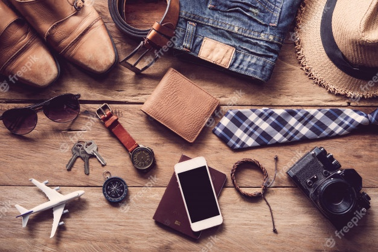

EL FOULARD

Puede que te suene un poco retro o anticuado, pero lo cierto es que un foulard es un accesorio que, incluso hoy en día, resulta del todo indispensable tanto desde un punto de vista práctico como estético. Sirve para tapar y destapar escotes pronunciados, pero también para dar un toque de color a los atuendos cromáticamente más monótonos. El foulard clásico está confeccionado en seda y son muchas las marcas de moda que han creado modelos icónicos. Dependiendo de tus gustos y necesidades, también puedes optar por un foulard o pashmina de algodón, lino, lana o cachemira.
EL SOMBRERO
Si hay un sombrero con el que todas las mujeres sueñan, ese es el que utilizaba Audrey Hepburn en Desayuno con Diamantes. Este accesorio, sin embargo, es especialmente conveniente en atuendos de diario ya que se convierte en un aliado de estilo perfecto para personalizarlos. Desde los modelos de ala ancha perfectos para el invierno hasta los Panamá tejidos a mano para el verano, siempre hay un sombrero capaz de adaptarse perfectamente a la forma de tu rostro para realzarlo.

MODAS Y ACCESORIOS PARA HOMBRES
Consejos de moda para hombres
Usa colores neutros.
Ten en cuenta tu físico.
Combina zapatos y cinturón.
Utiliza gafas para el sol.
Varía el calzado.
Elige la ropa interior adecuada.

¿Qué accesorios llevar con traje?
Los 7 accesorios masculinos para completar tu traje
Reloj. Sin duda uno de los accesorios más imprescindibles, un reloj es una extensión de tu persona y dice mucho sobre ti.
Anillos. Mancuernillas. Pulseras. Pinzas para corbatas. Cinturones. Carteras.
Y no puede faltar EL FOULARD que mostramos en la imagen anterior, en este caso para hombre.
